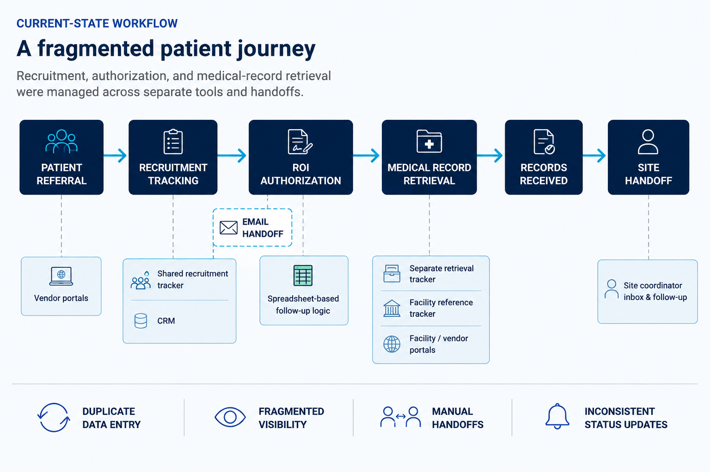

VOLUME DID NOT EQUAL QUALITY
Equal referral volume masked meaningful differences in vendor conversion and patient progression.
CLINICAL TRIAL OPERATIONS
From fragmented operational tracking to a more centralized model for workflow visibility, analysis, and action.
Patient recruitment, ROI authorization, and medical-record retrieval were managed across separate trackers, portals, spreadsheets, and communication channels.
The workflow worked, but visibility was fragmented. Information had to be maintained across multiple tools, handoffs depended on manual communication, and operational knowledge often lived outside the core workflow.

The relational model was designed around the way the operation actually worked. Recruitment, ROI authorization, medical-record retrieval, vendors, facilities, and sites were separated into related entities so each operational stage could be analyzed without losing the full patient journey.
Equal referral volume masked meaningful differences in vendor conversion and patient progression.
Medical-record turnaround times differed substantially, creating different levels of operational risk.
Connecting recruitment and retrieval stages exposed where patients stopped progressing through the workflow.
SQL answered the initial questions, but the analysis also revealed broader issues in handoffs, tracking, and visibility.
The project evolved beyond retrospective SQL analysis. The next phase evaluates current-state workflow gaps, business rules, standardized procedures, and a future-state model with stronger centralized visibility.
TECHNICAL IMPLEMENTATION
Version controlled with Git + GitHub
VIEW TECHNICAL REPOSITORY